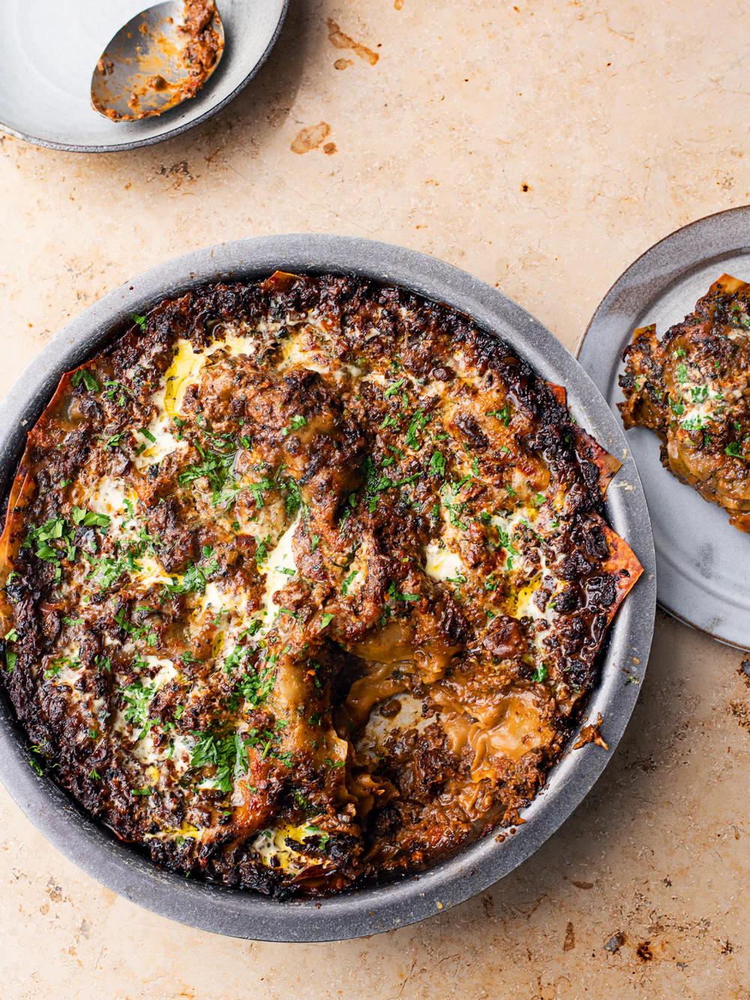

Spicy Mushroom Lasagna
Home

Description
This lasagne pays homage to Penne all’Aconese – the first dish development chef Ixta fell madly in love with.
It’s served at Ristorante Pizzeria Acone, a community-run restaurant in the Tuscan village of Acone.
The recipe is a closely guarded secret, but the earthy and deeply umami flavour of dried porcini mushrooms is impossible to miss.
This is our meatless take on that mythical sauce. The ragù can easily be made vegan if you lose the cream.
It can also be made ahead, refrigerated, and served with pasta or polenta. If you want to get ahead, the lasagne can be assembled,
refrigerated and baked the next day (once it’s back to room temperature).
Ingredients
- 750g chestnut mushrooms, halved
- 500g oyster mushrooms
- 135ml olive oil, plus extra for greasing
- 60g dried porcini mushrooms
- 30g dried wild mushrooms
- 2 dried red chillies, roughly chopped (deseeded for less heat)
- 2 dried red chillies, roughly chopped (deseeded for less heat)
- 500ml hot vegetable stock
- 1 onion, peeled and quartered
- 5 garlic cloves, roughly chopped
- 1 carrot, peeled and quartered (90g)
- 2–3 plum tomatoes, quartered (200g)
- 75g tomato paste
- 130ml double cream
- 60g Pecorino Romano, finely grated
- 60g parmesan, finely grated
- 5g basil leaves, finely chopped
- 10 g parsley leaves, finely chopped, plus an extra tsp to serve
- 250g dried lasagne sheets (that’s about 14 sheets)
- salt and black pepper
Steps
- Salt and black pepper
- Put the chestnut and oyster mushrooms into the large bowl of a food processor in three or four batches and pulse each batch until
finely chopped (or finely chop everything by hand). Toss the chopped mushrooms in a large bowl with 3 tablespoons of oil and 1 teaspoon
of salt and spread out on a large, 40cm x 35cm parchment-lined, rimmed baking tray. Bake for 30 minutes near the top of the oven, stirring
three times throughout, until the mushrooms are golden-brown; they will have reduced in volume significantly. Set aside. Reduce the oven
temperature to 200°C fan.
- Meanwhile, combine the dried mushrooms, chillies and hot stock in a large bowl and set aside to soak for half an hour. Strain the liquid into
another bowl, squeezing as much liquid from the mushrooms as possible to get about 340ml: if you have any less, top up with water.
Very roughly chop the rehydrated mushrooms (you want some chunks) and finely chop the chillies. Set the stock and mushrooms aside
separately.
- Put the onion, garlic and carrot into the food processor and pulse until finely chopped (or finely chop everything by hand).
Heat 60ml of oil in a large sauté pan or pot on a medium-high heat. Once hot, add the onion mixture and fry for 8 minutes, stirring
occasionally, until soft and golden. Pulse the tomatoes in the food processor until finely chopped (or finely chop by hand), then add to the
pan along with the tomato paste, 1½ teaspoons of salt and 1¾ teaspoons of freshly cracked black pepper. Cook for 7 minutes, stirring
occasionally. Add the rehydrated mushrooms and chillies and the roasted mushrooms and cook for 9 minutes, resisting the urge to stir: you
want the mushrooms to be slightly crisp and browned on the bottom. Stir in the reserved stock and 800ml of water and, once simmering,
reduce the heat to medium and cook for about 25 minutes, stirring occasionally, until you get the consistency of a ragù. Stir in 100ml
of the cream and simmer for another 2 minutes, then remove from the heat.
- Combine both cheeses and both herbs in a small bowl. To assemble the lasagne, spread one-fifth of the sauce in the bottom of a round 28cm
baking dish (or a 30cm x 20cm rectangular dish), then top with a fifth of the cheese mixture, followed by a layer of lasagne sheets, broken
to fit where necessary. Repeat these layers three more times in that order, and finish with a final layer of sauce and cheese: that’s five
layers of sauce and cheese and four layers of pasta.
- Drizzle over 1 tablespoon of cream and 1 tablespoon of oil, then cover with foil and bake for 15 minutes. Remove the foil, increase the
temperature to 220°C fan and bake for another 12 minutes, turning the dish round halfway. Turn the oven to the grill setting and grill for a
final 2 minutes, until the edges are brown and crisp. Set aside to cool for 5 or so minutes, then drizzle over the remaining tablespoon of
cream and oil. Sprinkle over the remaining parsley, finish with a good grind of pepper and serve.